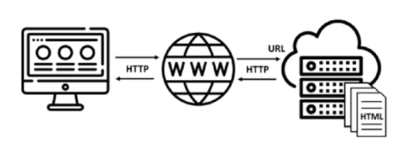
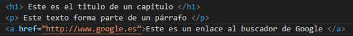
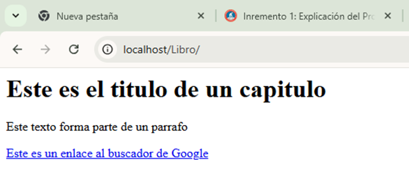
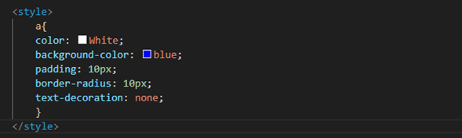
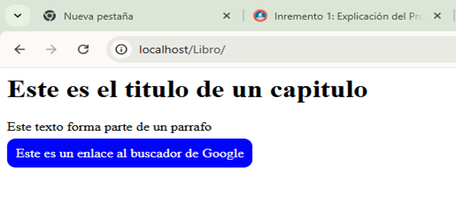

Unidad I
INTRODUCCION
Internet forma ya parte inseparable de nuestras vidas. Sin la existencia de esta red, muchas de las actividades que realizamos a diario, tanto personales como profesionales, no serían posibles. La inmediatez de acceso a la información, la facilidad para realizar cualquier tipo de gestión burocrática, la comodidad de las compras online, la colaboración entre equipos de trabajo o la capacidad para compartir opiniones e imágenes en nuestras redes sociales, son solo una pequeña muestra de todo lo que es posible gracias a Internet. Cuando utiliza un navegador, lo que está haciendo es acceder a las páginas ofrecidas por un servidor web. Entonces, ¿qué es en realidad la web y qué diferencia hay con Internet? Muchas veces ambos términos se usan de forma indistinta y, sin embargo, representan conceptos diferentes, ya que Internet es una red de comunicaciones y la web es un sistema de distribución de documentos hipertexto (texto que contiene enlaces desde los que se puede ir a otros textos).
El término web es la abreviatura del World Wide Web (WWW), que se puede traducir como red global. Fue creada en el CERN (Consejo Europeo para la Investigación Nuclear) por Tim Berners-Lee en 1989 para que universidades y científicos pudieran compartir sus investigaciones. Su principal característica es la de estar basada en una arquitectura cliente servidor donde un navegador (cliente) realiza una petición a un servidor, que le devuelve como respuesta una página web. La siguiente imagen muestra gráficamente este proceso.
Como puede observar, dicha comunicación utiliza el protocolo HTTP (Hypertext Transfer Protocol, Protocolo de Transferencia de Hipertextos), motivo por el que, para acceder a una página web, lo primero que se escribe en la barra de direcciones de un navegador es “http://”.
En el caso de que la comunicación entre el cliente y el servidor vaya cifrada, se emplea el protocolo HTTPS (la ‘S’ final indica que la transmisión de información es segura).
Las páginas web se desarrollan en HTML (acrónimo HyperText Markup Language, lenguaje de marcas hipertexto) y tienen una dirección única de acceso, llamada URL (Uniform Resource Locator, localizador uniforme de recursos). Es la que se escribe en la barra de direcciones del navegador (si la conoce) o la que aparece en dicho campo al pulsar sobre uno de los enlaces contenidos en la página de resultado de una búsqueda. Su formato es el siguiente:
http://nombre de dominio/página html
Como puede observar, a continuación del protocolo de comunicaciones se encuentra el nombre de dominio, que identifica el servidor web (por ejemplo, www.amazon.es). El URL acaba con el nombre de la página web, que en realidad es la ruta de acceso al archivo en la que está almacenada en el servidor. Si no se especificara ninguna, por defecto se mostraría la página home (archivo “index.html”) que, por lo general, es la puerta de entrada al resto de contenidos del sitio. En resumen, un servidor web atiende las peticiones HTTP de los clientes y devuelve como respuesta las páginas web solicitadas, que son archivos de texto escritos en HTML. Siga leyendo para descubrir los fundamentos de este lenguaje.
1.1 QUÉ ES HTML
Tal como se apuntó al principio de este capítulo, el acrónimo HTML hacía referencia a un lenguaje hipertexto. El motivo es porque permite el desarrollo de páginas desde las que se puede saltar a otras pulsando sobre el enlace (hipervínculo) correspondiente. Esta es la base de funcionamiento de HTML y, también, el motivo de la expansión de la web, ya que ha favorecido la creación de una red de conexiones mediante la que es posible acceder a prácticamente cualquier conocimiento humano. Otra de las características a las que hacía referencia el acrónimo HTML era que se trataba de un lenguaje de marcas.
Eso es debido a que está formado por un conjunto de etiquetas (o marcas) que determinan el papel que juega cada elemento de la página y, en consecuencia, su estructura. Así, un texto puede ser un encabezado (el título de la página, un capítulo o un apartado), parte de un párrafo o un hipervínculo. Todo depende de la etiqueta en la que se encuentre, tal como se puede ver en el siguiente código de ejemplo:
Aunque se hable de una etiqueta, estas suelen ir en parejas (una de inicio y otra de cierre), dentro de las cuales se encuentra el contenido afectado.
A continuación, puede ver el aspecto de estos tres textos en un navegador. El incluido entre las etiquetas h1 y /h1 se muestra de forma destacada, mientras que el que hay entre p y /p lo hace de forma sencilla. El perteneciente a la etiqueta a es muy especial, ya que si lo pulsara le llevaría a otra página (la del buscador de Google), motivo por el que su color es azul y está subrayado.
Sin embargo, cuando navega por Internet está acostumbrado a visitar páginas con elaborados diseños gráficos que llaman su atención, a la vez que facilitan su uso, algo que dista mucho de la página anterior. Eso es porque HTML presta atención a la organización del contenido (el papel que juega cada elemento), pero no a la forma en la que se visualiza. Por lo tanto, hace falta algo más que se encargue de este importante aspecto. Continúe leyendo para descubrir de qué se trata.
1.2 QUÉ ES CSS
Tal como ha podido apreciar en la imagen anterior, aunque HTML muestra cada etiqueta de una forma predeterminada, su presentación es muy pobre y, por descontado, siempre es la misma. Eso es debido a que se centra únicamente en la estructura del contenido, motivo por el que no ofrece facilidades para modificar, por ejemplo, la fuente o el color de un texto, el tamaño de una imagen, ni mucho menos determinar su posición en la página. Entonces, ¿cómo se consiguen los depurados diseños de las páginas web actuales? Mediante CSS (Cascading Style Sheets, hojas de estilo en cascada), otro lenguaje que, a diferencia de HTML, se centra en todo lo que tiene que ver con el aspecto visual de los elementos y su distribución en pantalla. Ambos lenguajes se complementan, por lo que, actualmente, todas las páginas web se desarrollan como una combinación de código HTML y CSS.
Además de HTML y CSS, una página web también suele estar compuesta por código JavaScript, lenguaje de programación que dota a la página de características interactivas, como, por ejemplo, las de ofrecer una respuesta dinámica o realizar una serie de tareas al pulsar un botón, rellenar un formulario, etc. Su estudio sale fuera del alcance de esta obra.
Si en HTML se utilizaban etiquetas, con CSS manejará reglas de estilo mediante las que se asignan los diferentes valores que deberá tener cada una de las propiedades visuales de los elementos que conforman la página. A modo de ejemplo, si añadiera la siguiente regla CSS al código HTML anterior, modificaría el aspecto del enlace para que parezca un botón:
Aunque en esta sección no se pretende explicar la sintaxis de una regla de estilo, algo que le llevará gran parte de la lectura de esta obra, se describirá brevemente la forma en la que actúa esta en concreto para modificar la apariencia del hipervínculo. La primera parte de la regla, llamada selector, está formada únicamente por la letra “a”, que corresponde al nombre de la etiqueta del hipervínculo, lo que indica que afecta a dicho elemento. Dentro, encerradas entre llaves, están las declaraciones mediante las que se asignan los valores a las diferentes propiedades visuales del hipervínculo. Así, el texto del enlace se escribirá ahora en color blanco sobre un fondo azul (la propiedad color toma el valor White y background-color el valor blue).
Con la propiedad padding se crea un espacio alrededor del texto del enlace de 10 píxeles que se rellena con el color de fondo. La propiedad border-radius redondea las esquinas de dicho espacio con la forma de un arco de circunferencia de 10 píxeles de radio. Por último, al asignar el valor none a la propiedad text-decoration se evita que el texto del enlace quede subrayado. De esa forma, se consigue que el hipervínculo tome la apariencia de un botón, tal como puede ver a continuación:
Ahora la página web está formada por código HTML y código CSS. Esta muestra la misma información que la página original, pero tiene un aire diferente. La página original presentaba todos los elementos HTML de forma predefinida, mientras que en la nueva se ha personalizado el aspecto del hipervínculo. Pero, lo más importante es que, cuando quiera volver a cambiarlo, solo tendrá que sustituir la regla de estilo de este elemento por otra distinta, sin necesidad de modificar el contenido (el código HTML).